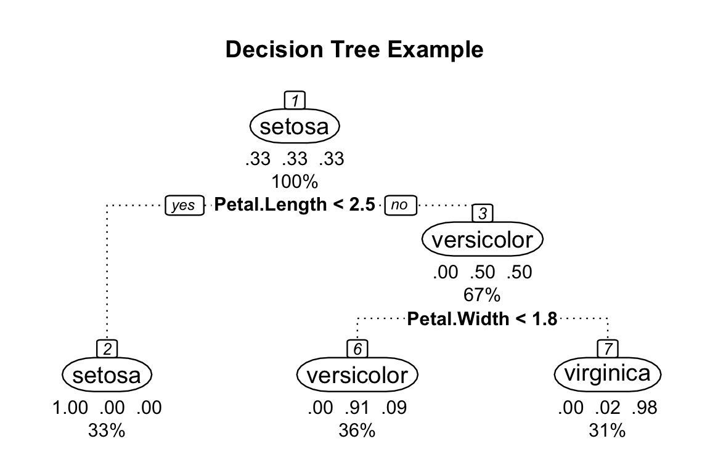
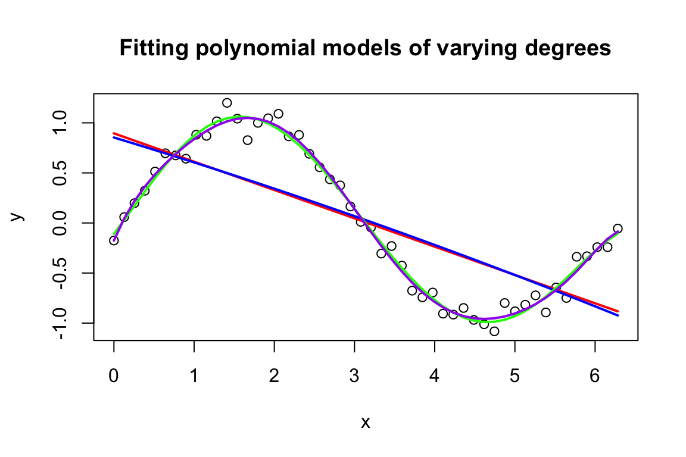
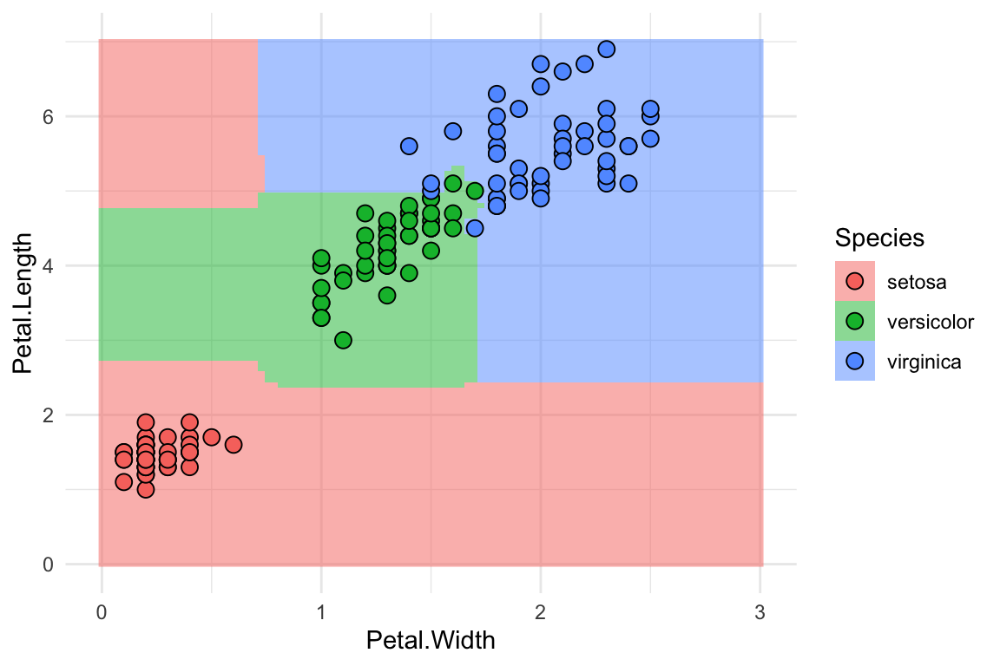

A decision tree is a type of supervised learning algorithm used in machine learning and data mining. It is a tree-like structure where each internal node represents a decision or test on an attribute or feature of the data, and each branch represents an outcome or decision based on the result of the test. The leaves of the tree represent the final outcomes or classifications. Decision trees are used for both classification and regression tasks. To illustrate, we use the iris dataset and the rpart.plot library in R:
library(rpart)data(iris)# Create a decision tree model using the rpart packagemodel<-rpart(Species~., data =iris)# Plot the decision tree using the rpart.plot packagelibrary(rpart.plot)rpart.plot(model, main="Decision Tree Example", box.palette ="RdYlBu", nn =TRUE, branch.lty =3, under =TRUE, cex=0.8, tweak=1.5, fallen.leaves =TRUE, compress=TRUE, box.col=c("white", "white", "white"), split.cex=0.8)#> Warning: cex and tweak both specified, applying both

This will generate a plot of the decision tree model. Here’s a description of what each label represents:
Node: A point in the tree where a decision is made based on a feature of the data.
Branch: A path from one node to another that represents the possible outcomes based on the decision made at the previous node.
Split criterion: The metric used to determine the best feature to split on at each node. This is often based on measures of impurity or information gain.
Leaf node: The end point of a branch that represents the final outcome or decision based on the previous splits.
Prediction: The predicted class label for the given input, based on the decision tree model.
The construction of a decision tree involves recursively splitting the data into subsets based on the values of one of the features or attributes, in a way that maximises the information gain at each split. The information gain is a measure of how much the uncertainty or entropy of the data is reduced by the split. The process continues until the data in each leaf node is homogeneous or has the same class, or until some stopping criterion is met.
One of the advantages of decision trees is that they are easy to interpret and visualise, making them a popular choice for exploratory data analysis. They can also handle both categorical and numerical data, and can handle missing values by assigning probabilities to each possible outcome. However, decision trees can be prone to overfitting, especially when the tree is too complex or the data is noisy. Pruning techniques and other methods can be used to address this issue. Overfitting and Bias-variance tradeoff Overfitting and the bias-variance tradeoff are important concepts in machine learning that relate to the ability of a model to generalise to new data.
Overfitting occurs when a model is too complex and fits the training data too closely, resulting in poor performance on new data. This can happen when a model is too flexible and captures noise in the data, rather than the underlying patterns. Underfitting, on the other hand, occurs when a model is too simple and fails to capture the underlying patterns in the data. This results in poor performance on both the training data and new data.
The bias-variance tradeoff describes the relationship between model complexity and performance. Bias refers to the error introduced by approximating a real-world problem with a simpler model, while variance refers to the amount by which the model would change if it was trained on a different set of data. High bias models are typically too simple and under-fit the data, while high variance models are too complex and overfit the data.
In order to find the optimal balance between bias and variance, it is important to consider the complexity of the model and the size and quality of the dataset. This can be achieved through techniques such as cross-validation and regularisation.
Here is an example in R:
# Generate a noisy sine wavex<-seq(0, 2*pi, length.out =50)y<-sin(x)+rnorm(50, sd =0.1)# Fit polynomial models of varying degreesfit1<-lm(y~poly(x, 1))fit2<-lm(y~poly(x, 2))fit3<-lm(y~poly(x, 5))fit4<-lm(y~poly(x, 10))# Plot the data and modelsplot(x, y, main ="Fitting polynomial models of varying degrees")lines(x, predict(fit1), col ="red", lwd =2)lines(x, predict(fit2), col ="blue", lwd =2)lines(x, predict(fit3), col ="green", lwd =2)lines(x, predict(fit4), col ="purple", lwd =2)# Calculate the training error for each modelmse1<-mean((y-predict(fit1))^2)mse2<-mean((y-predict(fit2))^2)mse3<-mean((y-predict(fit3))^2)mse4<-mean((y-predict(fit4))^2)# Print the training errorscat("MSE for linear model: ", mse1, "\n")#> MSE for linear model: 0.2374216cat("MSE for quadratic model: ", mse2, "\n")#> MSE for quadratic model: 0.2370386cat("MSE for fifth-degree polynomial: ", mse3, "\n")#> MSE for fifth-degree polynomial: 0.007500802cat("MSE for tenth-degree polynomial: ", mse4, "\n")#> MSE for tenth-degree polynomial: 0.006737454

In this example, we generate a noisy sine wave and fit polynomial models of varying degrees to the data. As the degree of the polynomial increases, the models become more complex and better fit the training data. However, as the complexity increases, the models become more prone to overfitting and perform poorly on new data. The mean squared error (MSE) is used as a measure of the training error for each model, and we can see that the MSE decreases as the complexity increases. However, the optimal degree of the polynomial is likely to be somewhere between the linear and tenth-degree models, depending on the size and quality of the dataset.
20.2 Random forest and bagging
Random Forest is an extension of the decision tree algorithm that uses an ensemble of decision trees to improve the accuracy and robustness of the model. The main difference between Random Forest and a single decision tree is that Random Forest creates multiple trees instead of a single tree, and each tree is trained on a random subset of the data. This results in a more diverse set of trees that are less likely to overfit to the training data. The final prediction of the Random Forest model is based on the combined predictions of all the trees in the forest. Compared to a single decision tree, Random Forest generally has better accuracy and is less prone to overfitting. We will illustrate the construction of a random forest in the exercise material.
Random Forest is trained on different subsets of the training data and bagging comes into play when selecting these subsets. Bagging, short for Bootstrap Aggregating, is an ensemble method in machine learning used to improve the performance and stability of a model. In the context of Random Forest, bagging is one of the key components that contribute to the robustness of the algorithm.
Bagging helps to reduce overfitting by introducing diversity among the individual trees in the ensemble. Since each tree is trained on a different subset of the data, they will capture different aspects of the data and make different errors. When the results from all trees are combined, usually by majority vote for classification or averaging for regression, the ensemble prediction tends to be more accurate and stable than that of any single tree.
Here is an R example:
library(randomForest)#> randomForest 4.7-1.1#> Type rfNews() to see new features/changes/bug fixes.library(ggplot2)#> #> Attaching package: 'ggplot2'#> The following object is masked from 'package:randomForest':#> #> marginrf<-randomForest(Species~Petal.Length+Petal.Width, data =iris, proximity =TRUE)rf_df<-expand.grid(Petal.Width =seq(0, 3, length.out =100), Petal.Length =seq(0, 7, length.out =100))rf_df$Species<-predict(rf, rf_df)p<-ggplot(iris, aes(Petal.Width, Petal.Length, fill =Species))+geom_raster(data =rf_df, alpha =0.5)+geom_point(shape =21, size =3)+theme_minimal()p

20.3 Boosted trees and gradient boosting
Boosting is an ensemble method in machine learning that combines weak classifiers into a single strong classifier. The main idea behind boosting is to iteratively train weak learners, usually decision trees, by assigning weights to the training data. At each iteration, the algorithm focuses on the samples that were misclassified in the previous round by assigning them higher weights. Then, a new weak learner is trained on this re-weighted dataset. The final strong classifier is a weighted combination of the individual weak classifiers.
Here’s an example using the R and the AdaBoost algorithm, a popular boosting method. We will use the “adabag” library and the famous “iris” dataset to illustrate the concept:
library(adabag)#> Loading required package: caret#> Loading required package: lattice#> Loading required package: foreach#> Loading required package: doParallel#> Loading required package: iterators#> Loading required package: parallel#Load the iris dataset and split it into training and testing sets:data(iris)set.seed(42)indices<-sample(1:nrow(iris), size =0.7*nrow(iris))train_set<-iris[indices,]test_set<-iris[-indices,]#Train the AdaBoost model:iris_boost<-boosting(Species~., data =train_set, boos =TRUE, mfinal =100)#Make predictions using the trained model:predictions<-predict(iris_boost, newdata =test_set)#Evaluate the model's performance:confusion_matrix<-table(predictions$class, test_set$Species)accuracy<-sum(diag(confusion_matrix))/sum(confusion_matrix)print(accuracy)#> [1] 0.9555556
Both Boosted Trees and Random Forests are powerful ensemble methods that use decision trees as base learners. They have different training strategies and strengths, which makes them suitable for different situations. Boosted Trees tend to perform well when the weak learners can be combined effectively to create a strong classifier, while Random Forests excel when many independent trees can be averaged to reduce variance and improve generalisation. It is often beneficial to try both methods on a given dataset and choose the one that provides the best performance based on the specific problem and evaluation metrics.